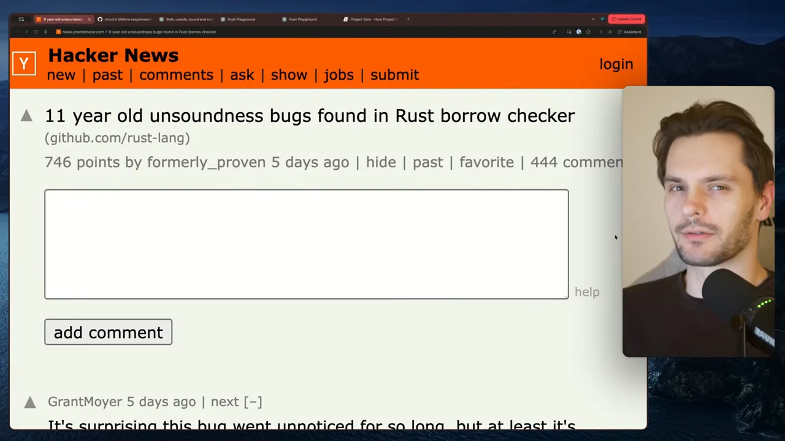
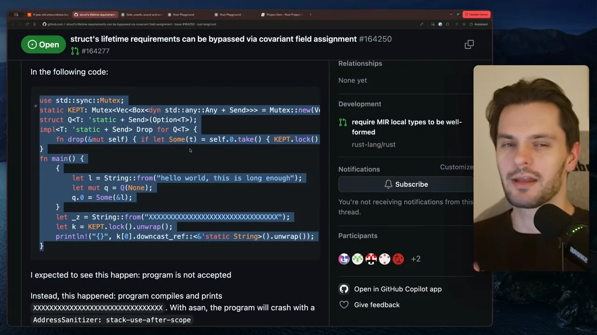
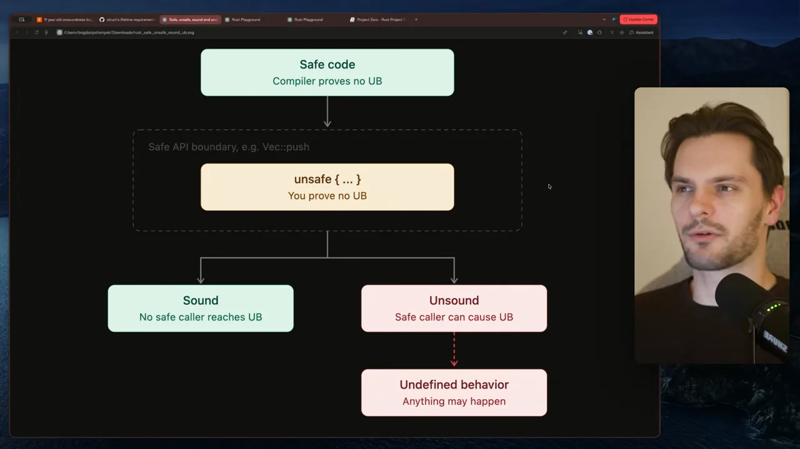
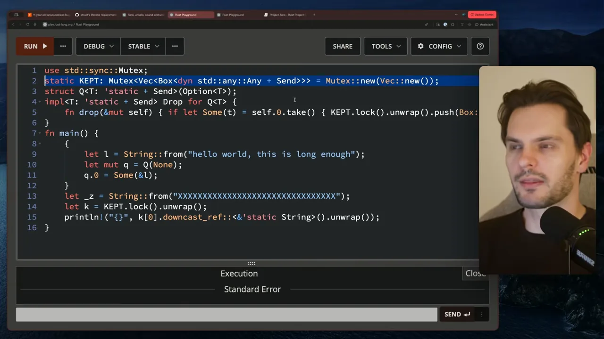
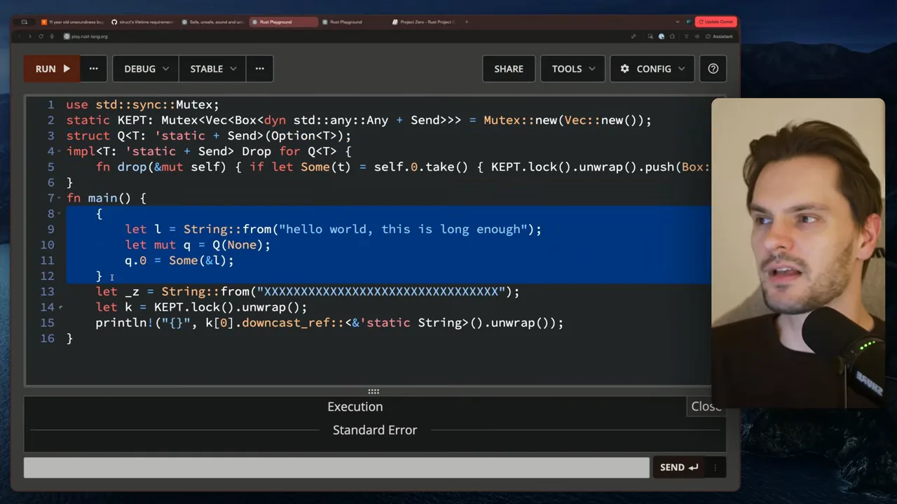
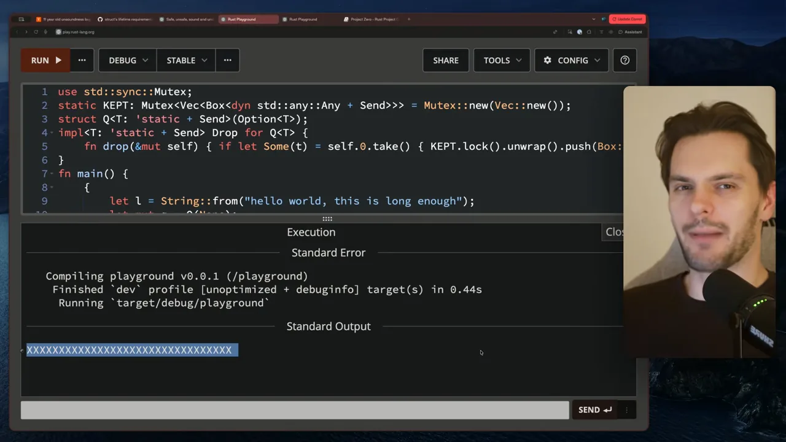
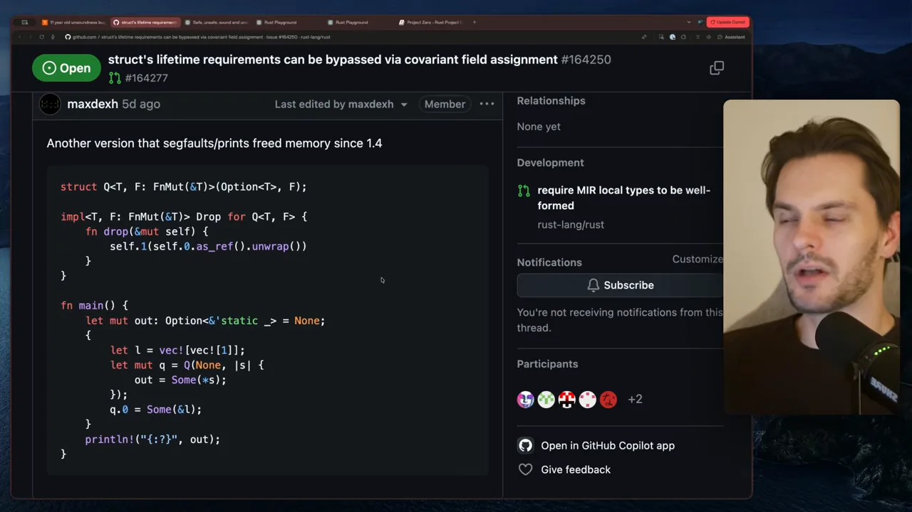
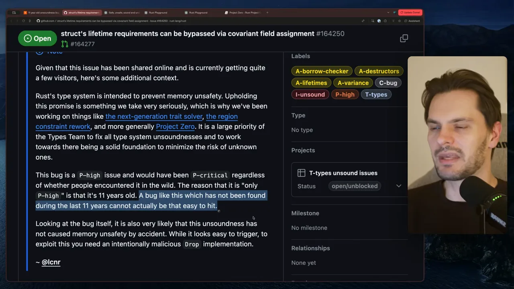
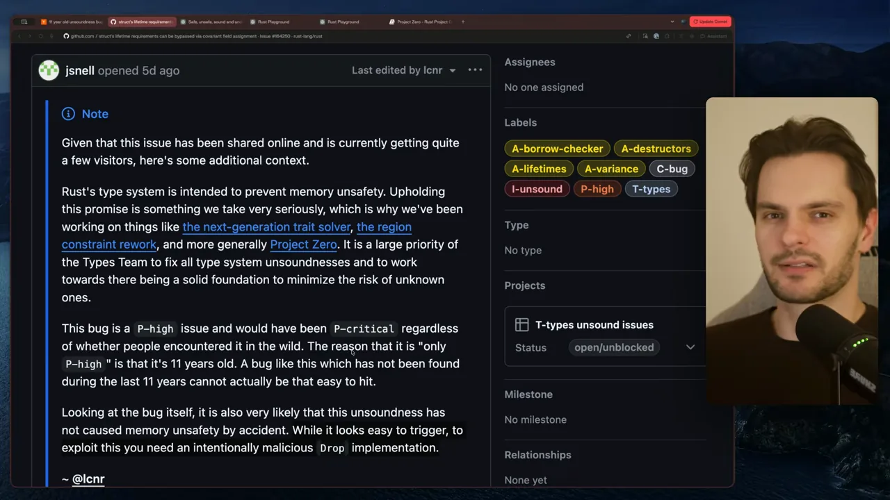

11년 묵은 구멍이 발견됐어요
안전한 Rust 코드만으로 이미 해제된 메모리를 읽을 수 있는 버그가 발견됐어요. 발표자는 해커 뉴스에 올라온 글로 이야기를 시작해요. 제목은 'Rust 보로 체커에서 11년 된 건전성 버그 발견'이에요. 746점에 댓글이 444개 달릴 만큼 주목을 받았어요.

그 글이 가리키는 GitHub 이슈는 #164250이에요. 왼쪽 위 초록색 Open 표시처럼 아직 해결되지 않았어요. 제목을 옮기면 '구조체의 라이프타임 조건을 공변 필드 대입으로 우회할 수 있다'예요. 본문에는 16줄짜리 코드가 있고, 아래쪽에 기대한 결과(컴파일 거부)와 실제 결과(컴파일되고 XXXX…를 출력)가 적혀 있어요.

왜 이게 큰일인지 알려면 먼저 Rust가 무엇을 약속하는지 알아야 해요. 다음 섹션이 그 이야기예요.
안전한 Rust, unsafe, 미정의 동작
발표자는 '안전한 코드', 'unsafe', '미정의 동작'이라는 말이 자주 헷갈린다며 다이어그램 하나로 정리해요. 위에서 아래로 읽으면 돼요. 맨 위 초록 상자가 안전한 코드, 점선 안 노란 상자가 unsafe 블록이에요. 아래쪽 초록 Sound와 빨간 Unsound 중 빨간 쪽만 미정의 동작으로 이어져요.

상자마다 뜻하는 것
| 다이어그램의 상자 | 누가 책임지나요 | 뜻 |
|---|---|---|
| Safe code | 컴파일러 | 평소에 쓰는 Rust예요. 컴파일러가 미정의 동작이 없다는 걸 증명해 줘요. |
| unsafe { … } | 개발자 | 컴파일러가 스스로 검증하지 못하는 저수준 코드예요. 나쁜 코드가 아니라, 증명 책임이 개발자에게 넘어온 코드예요. |
| Safe API(Application Programming Interface) boundary | 라이브러리 작성자 | unsafe 코드를 안전한 함수로 감싸서 내놓는 경계예요. 영상은 Vec::push를 예로 들어요. |
| Sound | — | 안전한 쪽에서 어떻게 불러도 미정의 동작에 닿지 않는 상태예요. |
| Unsound | — | 안전한 코드에서 부르기만 해도 미정의 동작이 날 수 있는 상태예요. |
미정의 동작은 결과가 정해지지 않은 동작이에요. 발표자가 드는 예는 잘못된 포인터를 역참조하는 경우예요. 깨진 데이터를 읽을 수도 있고, 보면 안 되는 데이터를 볼 수도 있고, 프로그램이 죽거나 보안 구멍이 생길 수도 있어요. 그중 무엇이 일어날지 모른다는 게 문제예요. 프로그램은 같은 입력에 같은 결과를 내야 하니까요.
그래서 원래 모델에서는 미정의 동작이 unsafe 코드에서만 나올 수 있어요. 그런데 안전한 코드만 썼는데 컴파일러 버그 때문에 미정의 동작이 있는 코드가 통과된다면 어떨까요. 다이어그램 맨 위 상자의 약속, 즉 '컴파일러가 증명한다'가 깨진 거예요. 이번 이슈가 정확히 그 경우예요.
버그 코드 한 줄씩 읽기
발표자는 이슈의 코드를 Rust Playground에 붙여 넣고 위에서부터 한 줄씩 짚어요. 화면에서 파란 줄이 지금 설명하는 줄이에요. 아래 캡처는 2행 static KEPT를 짚는 순간이에요.

use std::sync::Mutex;
static KEPT: Mutex<Vec<Box<dyn std::any::Any + Send>>> = Mutex::new(Vec::new());
struct Q<T: 'static + Send>(Option<T>);
impl<T: 'static + Send> Drop for Q<T> {
fn drop(&mut self) { if let Some(t) = self.0.take() { KEPT.lock().unwrap().push(Box::new(t)); } }
}
fn main() {
{
let l = String::from("hello world, this is long enough");
let mut q = Q(None);
q.0 = Some(&l);
}
let _z = String::from("XXXXXXXXXXXXXXXXXXXXXXXXXXXXXXXX");
let k = KEPT.lock().unwrap();
println!("{}", k[0].downcast_ref::<&'static String>().unwrap());
}무대를 차리는 1–6행
- 2행
KEPT: 프로그램이 끝날 때까지 살아 있는 전역 변수예요.Mutex안에 벡터가 들어 있어요. - 3행
Q<T>:Option<T>하나만 담는 튜플 구조체예요.T에는'static + Send조건이 붙어요.'static은 T 안에 짧게 사는 참조가 있으면 안 된다는 뜻이고,Send는 스레드 사이로 보낼 수 있다는 뜻이에요. - 4–6행
Drop구현:Q가 버려질 때 안에 든 값을 꺼내KEPT벡터에 밀어 넣어요. 여기가 이 코드의 함정이에요.
Drop 트레이트를 구현한 4–6행은 그 자체로는 문제가 없어요. T가 정말 'static이라면 프로그램 내내 유효한 값이니, 전역 벡터에 오래 보관해도 괜찮거든요. 문제는 T가 'static이 아닌데도 들어오는 경우예요.
구멍이 뚫리는 8–12행
main 안에서 중괄호로 안쪽 스코프를 하나 열어요. 문자열 l을 만들고, Q(None)으로 빈 q를 만든 다음, 11행에서 q.0 = Some(&l)로 l의 참조를 넣어요. 아래 캡처에서 파랗게 칠한 부분이 그 안쪽 스코프예요.

l은 12행 닫는 중괄호에서 사라져요. 그런데 11행은 'static이어야 할 자리에 그 l의 참조를 넣고 있어요.
영상 04:42에서 보기
l은 안쪽 스코프가 끝나면 해제되니 라이프타임이 'static이 아니에요. 그러니 &l은 T: 'static 조건을 어겨요. 그런데 Rust 컴파일러가 이 코드를 그냥 통과시켜요. 이게 버그의 정체예요.
스코프가 끝난 뒤 13–15행
12행에서 스코프가 끝나면 두 가지가 일어나요. l이 해제되고, q도 버려지면서 Drop이 돌아요. Drop은 안에 든 &l을 꺼내 KEPT에 넣어요. 이제 KEPT에는 이미 죽은 l을 가리키는 댕글링 참조가 하나 남아요. 아래 그림은 변수마다 언제부터 언제까지 살아 있는지를 줄 번호 위에 그린 거예요.
KEPT는 끝까지 살아 있는데, 그 안에 든 &l이 가리키는 l은 12행에서 이미 사라졌어요.13행의 트릭도 눈여겨볼 만해요. 원래 문자열과 길이가 똑같은 XXXX… 문자열을 새로 만들어요. 발표자 설명으로는, 방금 해제된 자리에 할당기가 새 문자열을 놓을 가능성이 높아서예요. 그러면 15행에서 댕글링 참조를 따라가 출력했을 때 XXXX…가 찍히고, 참조가 죽은 메모리를 보고 있다는 게 눈으로 확인돼요.
실행해 보면 무엇이 찍힐까요?
Playground에서 'RUN' 버튼을 누르면 결과가 아래 Execution 창에 나와요. 위쪽 Standard Error에는 컴파일과 실행 로그가, 아래쪽 Standard Output에는 출력이 보여요. 출력 칸에 찍힌 건 hello world, …가 아니라 XXXX…예요.

l 자리를 보고 있다는 뜻이에요.
영상 05:46에서 보기
발표자는 다시 이슈로 돌아가 댓글을 조금 내려 봐요. 다른 개발자들이 같은 버그를 더 짧은 코드로 재현한 버전을 여럿 올려 두었어요. 캡처의 댓글은 'Rust 1.4부터 세그폴트가 나거나 해제된 메모리를 출력하는 또 다른 버전'이라는 설명과 함께 코드를 붙였어요.

Drop에서 짧게 사는 참조를 밖으로 내보낸다는 뼈대는 같아요.
영상 05:55에서 보기
얼마나 걱정해야 할까요?
그럼 내 Rust 코드는 얼마나 걱정해야 할까요. 발표자는 이슈 맨 위에 Rust 팀이 붙인 안내문을 보여 줘요. 캡처에서 파랗게 칠한 문장이 그 답이에요. 11년 동안 아무도 찾지 못한 버그라면 실제로 밟기가 그렇게 쉬울 리 없다는 내용이에요.

I-unsound와 P-high가 이 이슈의 분류예요.
영상 06:13에서 보기
A bug like this which has not been found during the last 11 years cannot actually be that easy to hit.
지난 11년 동안 발견되지 않은 버그라면 실제로 그렇게 쉽게 밟히진 않아요.
— 이슈 안내문 (영상 06:02)
원래라면 가장 높은 등급인 P-critical이었겠지만, 이런 이유로 한 단계 낮은 P-high로 뒀다는 설명이에요. 발표자도 같은 판단이에요. 버그를 일으키기는 쉬워 보여도, 실제로 메모리 문제를 내려면 일부러 악의적인 Drop 구현을 짜야 해요. 평범한 코드가 우연히 걸릴 가능성은 낮아요.
그렇다고 넘어갈 버그는 아니에요. 안전한 Rust의 보장을 깨는 버그라 빨리 고쳐야 해요. Rust 팀은 이 버그 하나가 아니라 안전한 Rust의 건전성 버그 전부를 없애려고 Project Zero라는 목표를 세웠어요. 아래 캡처는 Rust Project Goals 사이트의 Project Zero 페이지예요.

발표자는 건전성 버그를 0개로 만드는 건 아주 어려운 일이라고 인정해요. 그래도 좇을 가치가 있는 북극성이고, Rust 팀이 이를 진지하게 다룬다는 점이 반갑다고 말해요. 시스템 코드를 쓸 때 더 믿고 쓸 수 있게 되니까요.